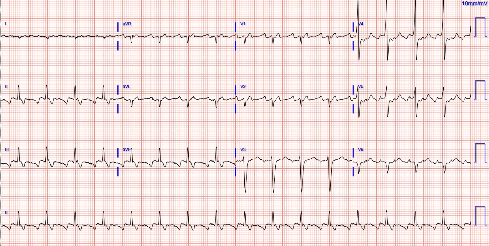
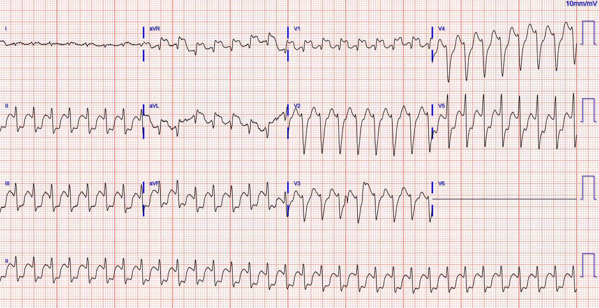
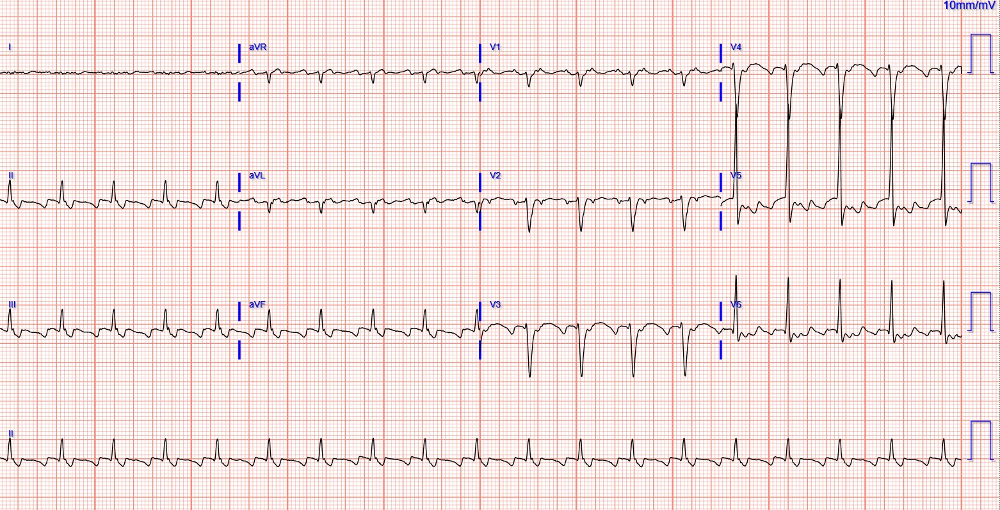
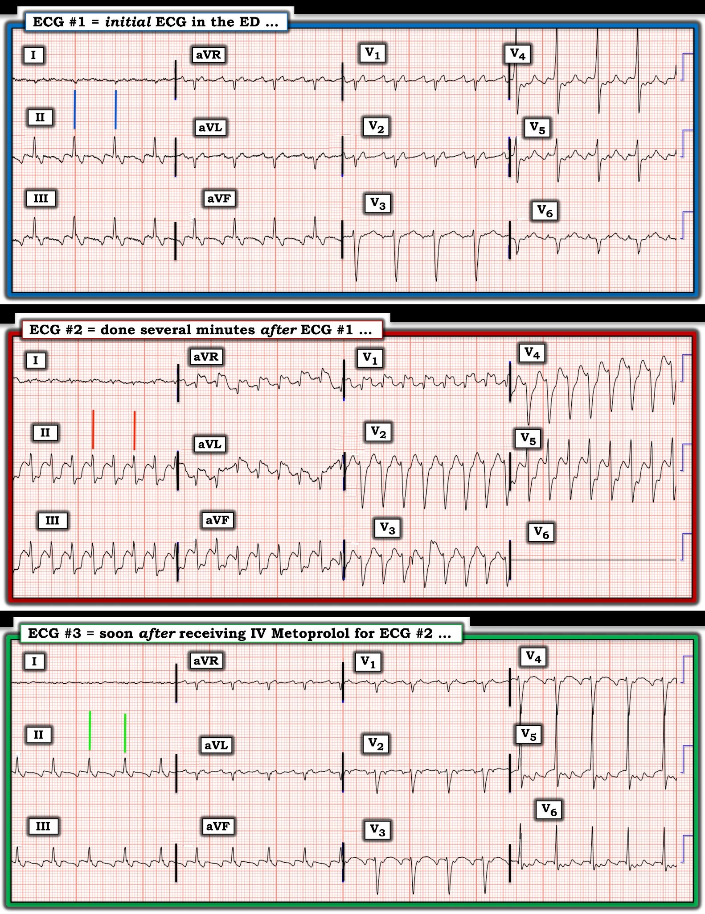

24/12/2023 — Một phụ nữ trẻ bị hồi hộp đánh trống ngực. Cô đang dùng thuốc gì? Cô không tuân thủ thuốc nào? Xử trí ra sao?
Bản dịch tiếng Việt của bài "A young woman with palpitations. What med is she on? With what medication is she non-compliant? What management?" – Dr. Smith’s ECG Blog. Giữ nguyên toàn bộ 5 hình ảnh của bản gốc.
Tác giả: Pendell Meyers
Một phụ nữ ở độ tuổi 20 mắc bệnh mô liên kết (connective tissue disorder), có tiền sử sửa gốc động mạch chủ và van động mạch chủ, đến khám vì hồi hộp đánh trống ngực (palpitations).
Đây là điện tâm đồ lúc phân loại (triage) của cô:


Cuồng nhĩ (atrial flutter) dẫn truyền 2:1. Tần số cuồng nhĩ khoảng 200 nhịp/phút, với dẫn truyền AV 2:1 tạo ra tần số thất gần như đúng 100 nhịp/phút.
Việc tần số cuồng nhĩ là 200 nhịp/phút (thay vì tần số điển hình hơn ở người lớn là ~300 nhịp/phút) gợi ý rằng bệnh nhân hẳn phải có một hoặc cả hai yếu tố sau:
1) nhĩ lớn (“đường đua rộng hơn”)
2) chẹn kênh natri (“xe đua chậm hơn”)
Xem lại danh sách thuốc của bệnh nhân thì thấy có flecainide. Khai thác thêm bệnh sử cho thấy cô mới khởi phát cuồng nhĩ ngay sau phẫu thuật động mạch chủ, và được cho dùng flecainide khoảng 1 tháng trước.
Thuốc nào khác lẽ ra cũng phải có trong danh sách thuốc?
Một thuốc ức chế nút AV (để ngăn khả năng dẫn truyền 1:1 nếu flecainide làm chậm tần số cuồng nhĩ đủ để được dẫn truyền 1:1). Đó có thể là một thuốc chẹn beta như metoprolol, hoặc một thuốc chẹn kênh calci như diltiazem.
Metoprolol cũng có trong danh sách thuốc. Và cả một thuốc chống đông phù hợp, vì cuồng nhĩ, cũng như rung nhĩ, có thể gây huyết khối tắc mạch và đột quỵ.
Nhưng bệnh sử lâm sàng gợi ý rằng cô chỉ đang uống flecainide, chứ không uống metoprolol.
Vài phút sau, trên monitor có thay đổi, và cô cho biết hồi hộp đánh trống ngực tăng lên:


Ngoài ra cô rất ổn định trong suốt thời gian có nhịp này.
Các bác sĩ đã cho một ít metoprolol tĩnh mạch và cho dùng lại metoprolol đường uống như đang dùng ở nhà. Gần như ngay sau khi tiêm metoprolol tĩnh mạch, nhịp trở lại cuồng nhĩ 2:1:


Không còn xuất hiện cuồng nhĩ 1:1 nữa. Cô diễn tiến tốt.
Smith: ở đây còn thiếu một điều! Bệnh nhân cuồng nhĩ/rung nhĩ dùng flecainide là để cố gắng duy trì nhịp xoang. Đây là chiến lược “kiểm soát nhịp” (rhythm control). Một số bệnh nhân thậm chí còn dùng flecainide từng đợt để tự chuyển nhịp khi cảm thấy rung/cuồng nhĩ. Cách này gọi là flecainide “viên thuốc trong túi” (pill in the pocket). Trong ca này, chúng ta biết bệnh nhân đang uống flecainide nhờ tần số nhĩ chậm. Vậy là flecainide không làm được nhiệm vụ của nó!! Nếu tôi gặp bệnh nhân này ở khoa cấp cứu (ED), tôi sẽ sốc điện chuyển nhịp về nhịp xoang. Có thể bệnh của cô đã tiến triển đến mức không thể duy trì nhịp xoang được nữa, nhưng vẫn đáng thử. Cô đã được dùng thuốc chống đông, nên đó không phải là vấn đề.
Flecainide: Đây là một thuốc chẹn kênh Na có thể nguy hiểm, có thể gây rối loạn nhịp thất kể cả rung thất. Nói cách khác, tác dụng phụ chính là đột tử! Chuyên khoa cấp cứu không bao giờ nên khởi đầu thuốc này. Bệnh nhân phải có tim hoàn toàn bình thường về cấu trúc. Ngoài lề: Bác sĩ điện sinh lý của tôi đã cho tôi dùng flecainide để ức chế các PVC gây khó chịu (đó là thời gian tôi trực rất nhiều ca đêm ở tuổi 58 — khi tôi thôi trực đêm thì chúng biến mất! Giai thoại? Nhân quả? Trùng hợp?). Trước khi khởi đầu flecainide, tôi đã được chụp MRI tim. Trước khi cho tiếp tục flecainide, ông ấy bắt tôi lên thảm lăn khi đang dùng liều đầy đủ và gắng sức tối đa (18 phút) và đo QRS để chắc chắn rằng QRS hoàn toàn không giãn rộng. Chỉ khi đó ông mới tin chắc rằng thuốc sẽ không gây rung thất!
Những điểm cần học:
Cuồng nhĩ không nhất thiết phải có tần số nhĩ 300 nhịp/phút và tần số thất 150 nhịp/phút (2:1). Một số yếu tố có thể làm thay đổi tần số nhĩ và kiểu dẫn truyền AV. Lớn nhĩ và thuốc chẹn kênh Na có thể làm giảm tần số cuồng nhĩ.
Bệnh nhân dùng thuốc chẹn kênh Na vì cuồng nhĩ thường nên được dùng kèm một thuốc ức chế nút AV để ngăn cuồng nhĩ 1:1.
Nếu bệnh nhân đang dùng flecainide vì cuồng nhĩ/rung nhĩ, thì kế hoạch điều trị là “kiểm soát nhịp”. Nếu họ đến khoa cấp cứu và đang dùng thuốc chống đông, hoặc triệu chứng dưới 12 giờ, thì cứ tiến hành sốc điện chuyển nhịp

===================================
BÌNH LUẬN CỦA TÔI, bởi KEN GRAUER, MD (24/12/2023):
===================================
Ca hôm nay của bác sĩ Meyers nhắc chúng ta một điều quan trọng về những gì có thể xảy ra khi dùng Flecainide cho AFlutter (cuồng nhĩ – Atrial Flutter) — mà không có tác dụng bảo vệ của thuốc chẹn ß để ngăn dẫn truyền AV 1:1 hoạt động cuồng nhĩ.
- Tôi tập trung bình luận vào một số khía cạnh thú vị khác mà việc xem lại ca hôm nay gợi ra. Để rõ ràng và dễ so sánh, tôi đã ghép trong Hình 1 — 3 điện tâm đồ liên tiếp của ca hôm nay.
CÂU HỎI:
- Bạn đã nhận ra BAO NHIÊU khía cạnh khác của ca hôm nay?


Bạn đã tính tần số nhĩ và tần số thất chưa?
Như bác sĩ Meyers đã nêu — Với bối cảnh một bệnh nhân đã biết có AFlutter từ khi sửa van động mạch chủ — mà cô đang uống Flecainide nhưng không uống Metoprolol đã được kê — điện tâm đồ #2 gần như chắc chắn thể hiện việc AFlutter của cô chuyển từ dẫn truyền AV 2:1 sang 1:1.
- Việc tính tần số nhĩ và tần số thất ở điện tâm đồ #1 và điện tâm đồ #2 — càng ủng hộ thêm giả định rằng nhịp ở điện tâm đồ #2 là AFlutter 1:1.
- Tôi thấy dùng phương pháp Cách-Một-Nhát (Every-Other-Beat Method) là cách dễ và nhanh nhất để ước tính chính xác tần số tim khi nhịp nhanh và đều. Tôi chọn một phức bộ mà một phần của QRS bắt đầu hoặc kết thúc trên một đường kẻ đậm của lưới điện tâm đồ. Tôi đã làm như vậy ở chuyển đạo II cho mỗi bản ghi trong 3 bản ghi ở Hình 1.
- Áp dụng phương pháp này để tính tần số thất ở điện tâm đồ #1 — Ta thấy khoảng R-R (khoảng giữa 2 đường dọc màu XANH DƯƠNG) — kéo dài gần như đúng 3 ô lớn — nghĩa là tần số thất = 300 ÷ 3 = 100/phút.
- Vì khoảng PR không đổi suốt bản ghi — và vì ta thấy rõ có 2 sóng P cho mỗi QRS — nên tần số nhĩ ở điện tâm đồ #1 = 100 X 2 = 200/phút.
- ĐIỂM THEN CHỐT (PEARL) #1: Khi tôi đang cân nhắc liệu một bệnh nhân SVT có dẫn truyền AV 2:1 đã chuyển sang dẫn truyền AV 1:1 hay chưa — tôi thấy việc tần số thất (vốn bằng một nửa tần số nhĩ khi còn dẫn truyền AV 2:1) — nay bằng với tần số nhĩ trước đó — ủng hộ mạnh mẽ kết luận rằng dẫn truyền 2:1 nay đã thành 1:1.
- Lưu ý ở điện tâm đồ #2 — nay 2 phức bộ QRS chiếm 3 ô lớn mới ghi xong (khoảng giữa 2 đường dọc màu ĐỎ) — mà theo phương pháp Cách-Một-Nhát tương ứng với tần số thất nay là 200/phút (Một nửa tần số là 300 ÷ 3 = 100/phút. X 2 = 200/phút).
BẠN có nhận ra không? — rằng tần số thất (và do đó cả tần số nhĩ) nay đã nhanh hơn ở điện tâm đồ #3 so với ở điện tâm đồ #1 và #2?
- Theo phương pháp Cách-Một-Nhát — khoảng R-R giữa mỗi nhát (khoảng giữa 2 đường dọc màu XANH LÁ) — nay rõ ràng ngắn hơn 3 ô lớn — tương ứng với tần số thất ~110/phút.
- Điều này có nghĩa là tần số nhĩ của hoạt động cuồng nhĩ nay nhanh hơn 200/phút (hay 110 X 2 ~ 220/phút).
- “Tin tốt” — là AFlutter 1:1 vốn có ở điện tâm đồ #2 — nay đã chuyển thành AFlutter 2:1, kéo theo giảm tần số thất từ 200/phút — xuống 110/phút.
- Dù vậy — TẠI SAO tần số nhĩ lại trở nên nhanh hơn sau khi tiêm thuốc chẹn ß tĩnh mạch? Tôi không nghĩ rằng tác dụng làm giảm giao cảm và ức chế nút AV của thuốc chẹn ß lại làm tăng tốc hoạt động nhĩ.
- Thay vì do tác dụng làm giảm giao cảm và ức chế nút AV của thuốc chẹn ß — có lẽ đơn giản là nút AV của bệnh nhân này có thể dẫn truyền 1:1 ở tần số nhĩ 200/phút — nhưng không dẫn truyền được như vậy khi tần số nhĩ đạt 220/phút.
- Ý nghĩa tiềm tàng của điều trên: NẾU tần số nhĩ “chậm lại” đôi chút và trở về ~200/phút — Liệu thuốc chẹn ß có tiếp tục duy trì được dẫn truyền AV 2:1 không?
Các câu hỏi khác về xử trí: Bệnh nhân đến khoa cấp cứu vì hồi hộp đánh trống ngực — và ban đầu ở nhịp AFlutter dẫn truyền AV 2:1. Có vẻ cô đã được cho ra về từ khoa cấp cứu với cùng nhịp đó (dù tần số nhĩ có tăng nhẹ).
- Mục tiêu điều trị AFlutter của bệnh nhân này là gì? Bệnh nhân có phải là đối tượng để sốc điện chuyển nhịp hay triệt đốt không? (hoặc có lẽ cô đã được sốc điện chuyển nhịp một hoặc nhiều lần rồi?). Và nhất là nếu AFlutter của cô là nhịp vĩnh viễn — Bệnh nhân có đang được dùng thuốc chống đông không?
Làm thế nào để phân biệt giữa AFlutter với ATach?
Như bác sĩ Meyers đã nhấn mạnh — nhịp ban đầu trong ca hôm nay là AFlutter với dẫn truyền AV 2:1. Xin nhấn mạnh:
- ĐIỂM THEN CHỐT #2: Phân biệt AFlutter với nhịp nhanh nhĩ (ATach) có thể khó trên điện tâm đồ bề mặt. Nên hiểu rằng sự phân biệt này không phải lúc nào cũng làm được dựa trên các đặc điểm điện tâm đồ — vì các dấu hiệu điện tâm đồ này chồng lấp nhau giữa một số thể AFlutter với ATach.
- AFlutter chưa điều trị trong đa số trường hợp là nhịp nhanh hơn — với tần số nhĩ của cuồng nhĩ thường nằm trong khoảng 250-350/phút (thường gặp nhất là rất gần ~300/phút). Mặc dù ATach đôi khi có thể đạt tần số nhĩ trên 250/phút — ATach thường không nhanh đến mức này. Dù vậy — ca hôm nay cho thấy việc dùng thuốc chống loạn nhịp có thể giải thích vì sao AFlutter biểu hiện với tần số nhĩ thấp hơn nhiều so với mức 300/phút “như dự kiến”.
- Về lý thuyết — AFlutter điển hình biểu hiện hình ảnh “răng cưa” đều đặn của hoạt động nhĩ — trong khi ATach thường có đường nền đẳng điện giữa các sóng nhĩ. Hình ảnh răng cưa đặc trưng của AFlutter này có thấy ở điện tâm đồ #1 ở cả các chuyển đạo dưới, lẫn ở chuyển đạo V1 và V2. Dù vậy — sự phân biệt về hình thái giữa AFlutter và ATach không phải lúc nào cũng dễ thấy.
- Dù vậy, “tin tốt” — là xử trí ban đầu tại khoa cấp cứu cho cả AFlutter và ATach là tương tự nhau. Nếu cân nhắc triệt đốt — chẩn đoán xác định sẽ được đưa ra khi thăm dò điện sinh lý (EP). (Để biết thêm về AFlutter — Mời xem Bình luận của tôi trong bài ngày 12 tháng Mười Một năm 2019 và bài ngày 1 tháng Năm năm 2023 trên Dr. Smith’s ECG Blog).
TẠI SAO biên độ QRS lại nhỏ đến vậy ở chuyển đạo I?
Có hai thực thể cần nghĩ đến ngay nếu ta thấy một đường phẳng (hoặc gần như một đường phẳng) ở chuyển đạo I:
- Nhận ra một phức bộ QRST dạng đường phẳng ( = điện thế bằng không) ở một trong 3 chuyển đạo chi chuẩn (tức là ở chuyển đạo I, II hoặc III) — cần gợi ý ngay khả năng đặt sai vị trí điện cực. Nếu chuyển đạo có điện thế bằng không là chuyển đạo I — điều này gợi ý đảo điện cực tay-chân hai bên (Xem Life-In-The-Fast-Lane để biết chi tiết). Lý do tôi không nghĩ đảo điện cực là nguyên nhân gây hình ảnh ở chuyển đạo I trong 3 điện tâm đồ hôm nay — là vì thay vì một đường phẳng hoàn toàn, điện tâm đồ #2 có biểu hiện một phức bộ QRS và sóng T rõ ràng. Ngoài ra — phức bộ QRS dương ở các chuyển đạo dưới, trong khi với đảo điện cực tay-chân hai bên, QRS ở các chuyển đạo này thường chủ yếu âm.
- ĐIỂM THEN CHỐT #3: Thay vì đảo điện cực — lý do khiến phức bộ QRST rất nhỏ ở chuyển đạo I trong các bản ghi hôm nay là dấu hiệu Schamroth (Schamroth’s Sign). Như đã nêu trong Bình luận của tôi ở bài ngày 17 tháng Sáu năm 2018 trên Dr. Smith’s ECG Blog — sự hiện diện của một “vectơ gần như bằng không” (null vector) ở chuyển đạo I chuẩn (tức là sóng P, phức bộ QRS và sóng T đều có kích thước dưới 2mm) — gợi ý mạnh mẽ bệnh phổi nặng và lâu năm.
- Điều này có liên quan đến ca hôm nay — ở chỗ bệnh nhân hôm nay là một phụ nữ ở độ tuổi 20 đã biết mắc CTD (bệnh mô liên kết – Connective Tissue Disease). Một số biến chứng phổi có thể nặng, làm tăng tỷ lệ bệnh tật và tử vong, thường gặp ở bệnh nhân CTD (Taha và Feteih — NIH, Skills in Rheumatology, 2021).
- Xin nhấn mạnh: Dấu hiệu Schamroth không phải là dấu hiệu điện tâm đồ thường gặp ở bệnh nhân RVH. Dù vậy, điều quan trọng là phải nhận ra dấu hiệu điện tâm đồ này khi nó hiện diện — vì ý nghĩa tiên lượng xấu đáng kể mà nó mang lại. (Để biết thêm về nhận diện RVH trên điện tâm đồ — Mời xem Bình luận của tôi ở cuối trang trong bài ngày 6 tháng Ba năm 2022 trên Dr. Smith’s ECG Blog).
Cuối cùng — BẠN có nhận ra các “sự cố kỹ thuật” (technical misadventures) trong Hình 1?
Tôi cho rằng có một vài sự cố kỹ thuật trong các bản ghi hôm nay. Dù những điều này không làm thay đổi xử trí cấp cứu rối loạn nhịp của bệnh nhân — Chúng vẫn cần được ghi nhận.
- Chuyển đạo V6 ở điện tâm đồ #1 có vẻ bị đặt sai vị trí. Thật không hợp lý về mặt sinh lý khi đột nhiên thấy một phức bộ QRS âm hoàn toàn ở chuyển đạo ngực nằm bên nhất này.
- Đường phẳng ở chuyển đạo V6 trong điện tâm đồ #2 cho thấy một chuyển đạo ngực không hoạt động.
- Việc chuyển đạo V6 ở điện tâm đồ #1 có vấn đề — được xác nhận bởi hình ảnh chủ yếu dương nay thấy ở điện tâm đồ #3.
- Suy đoán: Vị trí đặt điện cực chuyển đạo ngực ở phụ nữ dễ thay đổi tùy thói quen của kỹ thuật viên, sự e ngại của bệnh nhân, cũng như vị trí và khối lượng mô vú — những yếu tố có thể cản trở việc đặt điện cực nhất quán khi các bản ghi liên tiếp được ghi bởi các kỹ thuật viên khác nhau. Điều này có thể phần nào giải thích những điểm không nhất quán về kỹ thuật thấy ở Hình 1.